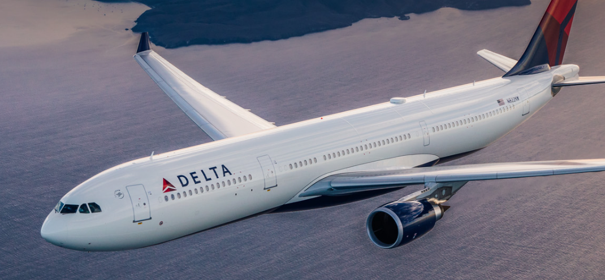
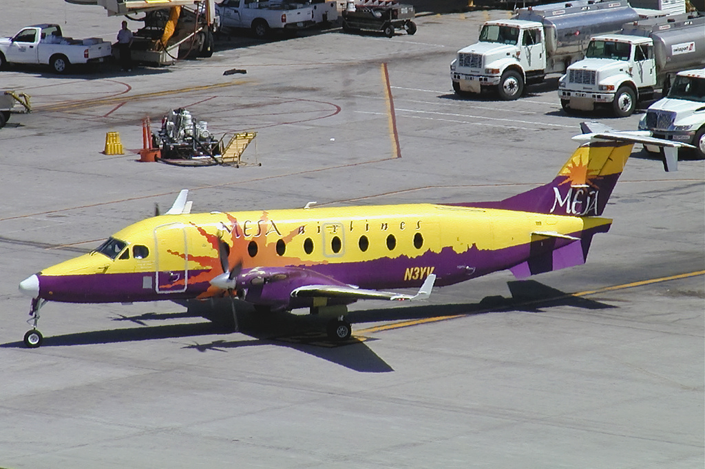

Airline Delayed Time
Please note that the airline codes stand for:
FL= AirTran Airways CorporationF9= Frontier Airlines Inc.DL= Delta Air Lines Inc.YV= Mesa AirlinesEV= ExpressJet Airline Inc.OO= SkyWest Airlines Inc.9E= Endeavor Air Inc.UA= United Air Lines Inc.NK= Spirit Air LinesVX= Virgin AmericaB6= JetBlue AirwaysAS= Alaska Airlines Inc.AA= American Airline Inc.MQ= Envoy AirUS= US Airways Inc.WN= Southwest AirlinesHA= Hawaiian Airlines Inc.

Delta Air Lines has the highest average delay minutes per flight among the delayed flights (average delay 200.4493 minutes per delayed flight in the sum of all causes). Mesa Airlines, ExpressJet Airlines Inc., SkyWest Airlines Inc., and Endeavor Air Inc. also have high average of delay minutes per flight among the delayed flights. It might be caused by some outliers that has extremely large delay minutes and the reason is needed to be further investigate. This piece of new showing that “A Delta Flight Was Delayed for 2 Hours Because a Pilot and Flight Attendant Had an Argument” might show a possible example of the outliers. (www.Fortune.com).
Security delay affects largely on Delta Air Lines. The average delay minutes per delayed flights of Delta Air Lines, caused by security delay, is almost twice of that of other airlines, such as American Airlines, and United Air Lines. Also, AirTran Airways Corporation and Frontier Airlines Inc. do not have security delay on the graph, nor the dataset. It might be the true that these two airline barely experience delay due to security within the five years. However, it might not be ideal in the real world. One possible explanation could be that the data might be not recorded in the dataset.

National Aviation System delay affects largely on Virgin America. The average delay minutes per delayed flights of Delta Air Lines, casued by NAS delay, is almost twice of that of other airlines, such as Alaska Airlines, and SkyWest Airlines.
Weather delay affects the airlines almost evenly. Most of the average delay minutes per delayed flights of different airlines, casued by weather delay, is around 40 minutes. However, Virgin America shows the lowest delay minutes (under 20 minutes) per delayed flight.

Carrier delay affects largely on Mesa Airlines. Among these 17 airlines, their average delay minutes per delayed flights caused by carrier delay mainly fluctuates between 20 minutes to 45 minutes.
Late aircraft delay affects the airlines almost evenly around 40 minutes.However, Hawaiian Airlines shows the lowest delay minutes (under 30 minutes) per delayed flight.